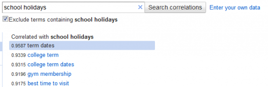
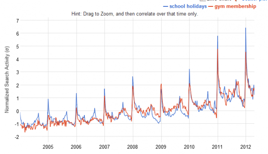

I was doing some SEO work today on my school holidays and found a strange correlation. It turns out that people start searching for gym memberships at the same time of the year as searching for school holidays.

